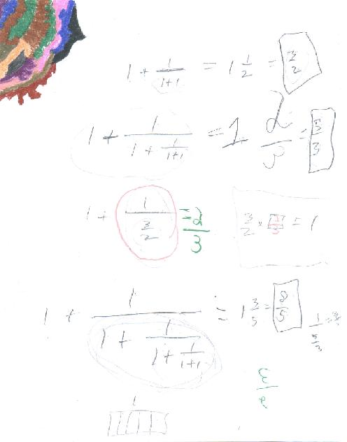
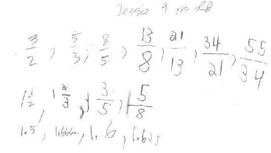
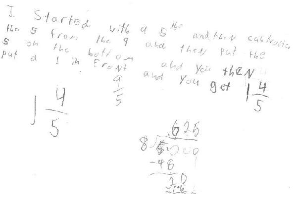

Jesse, a 4th grader, finds a pattern changing a mixed number to an improper fraction
Don started Jesse on continued fractions, which leads to an infinite continued fraction and the Golden Mean. Don showed him where to start (with the 1+1). And they talked about the reciprocal of a fraction 1/3/2 = 2/3, because 3/2 x 2/3 = 1. They did the following:

Don had Jesse keep track of the answers as improper fractions, then mixed numbers and decimals. Changing fractions to decimals was new to him, but he went a long way.

Jesse explains his method of changing an improper fraction to a mixed number. In the example below he starts with 9/5. He left out that he puts the 4 on top:

Jesse used his method for the ones above. Don never saw this before! Don had Jesse do one like 12/5 = 1 7/5, and then Don had him continue till he got a proper fraction in the mixed number 2 2/5.
Notice that the numbers they got for the continued fractions were alternating!
Fine job, Jesse!